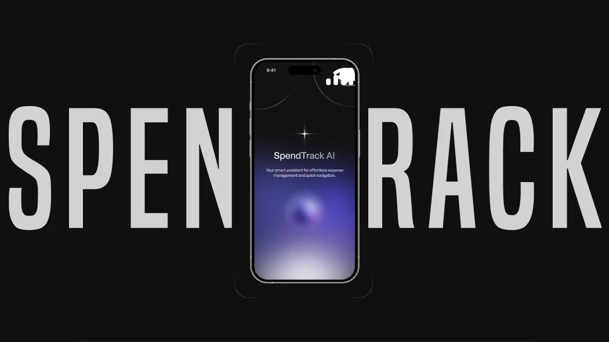
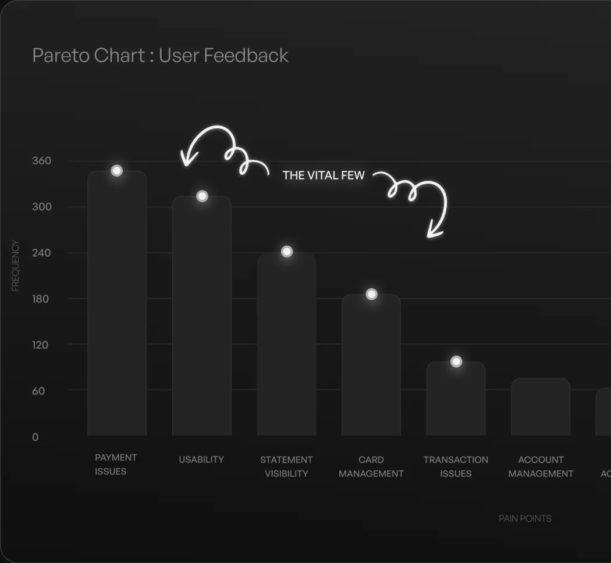
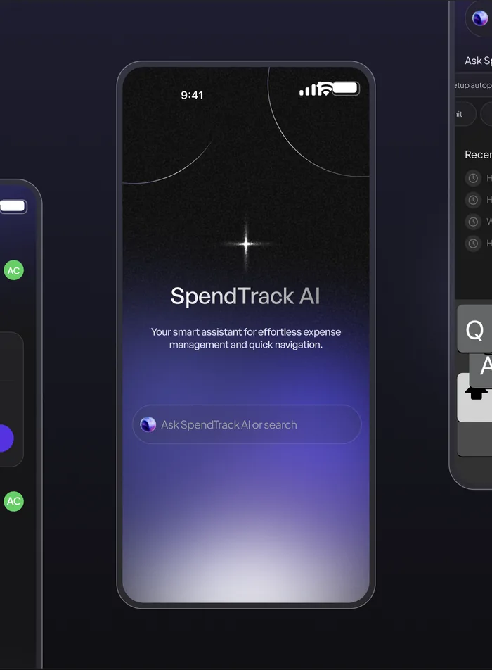
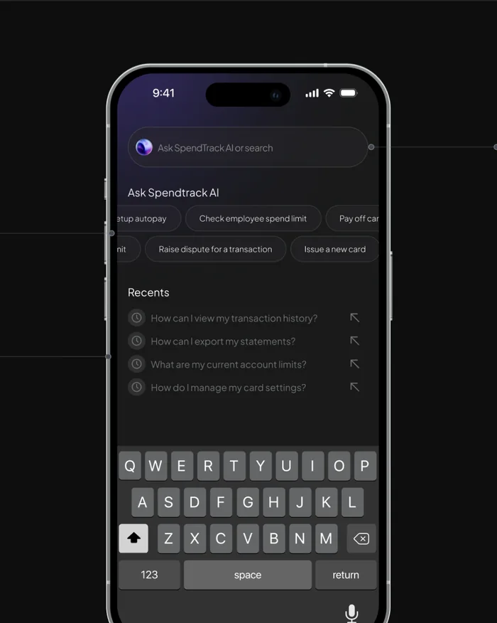
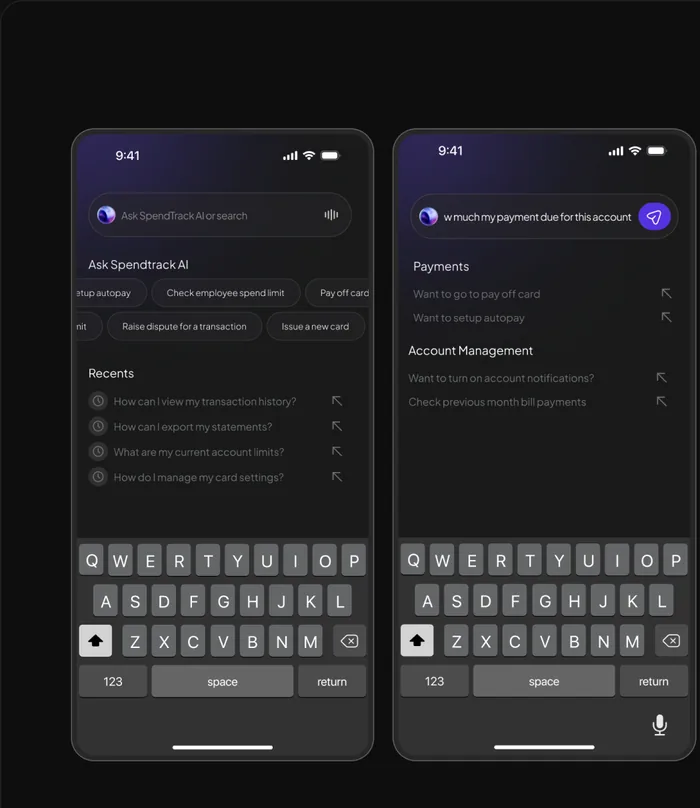
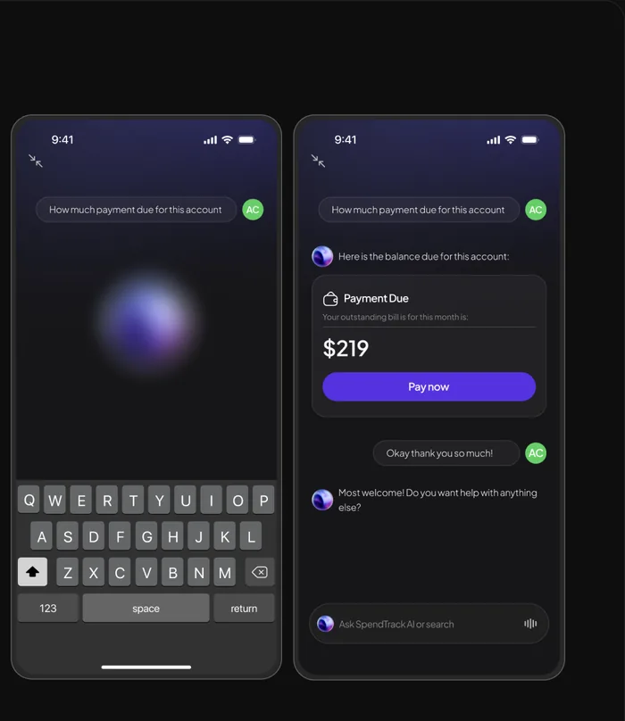

Fiserv is one of the global leaders in the fintech industry.
Short version · full case study on desktop
They acquired a company spendtrack on which I worked on in my internship. SpendTrack provides small business and commercial credit card clients with a tool that consolidates administrative activities and tasks into an all-in-one card-management solution.
To leverage Generative AI capabilities and design a solution addressing the top priority of usability and user concerns.
Problem breakdown
So what went wrong?
Difficulties in discovery and navigation of primary features and data, were uncovered amongst the users by analyzing the in-app user feedback data. The reason being was because of the design debt accumulated as well as the quick on the go fixes made throughout the journey.
- How to pay off my card?
- Where do I find my statements?
- How to issue a new card?
- This has a learning curve
- No way I can find my transactions
- Very Clunky
Unable to achieve primary tasks
This issue is rooted in the complexity of key features, preventing users from fulfilling their core goals efficiently.
Difficult to navigate
The app’s navigation is confusing and not intuitive, forcing users to spend excessive time searching for essential features.
Increased frustration
The complexity and lack of user-friendly design leave users feeling discontent, affecting their overall trust and confidence in the app.
Pareto chart
Focus on the Few, Fix the Most!
I analyzed 1800+ user feedbacks given on our product from the months of March, April, May and June. We have a feature wherein users can give in-app feedback or they will get a push notification twice a year

Solution
A dynamic, generative AI-powered search bar that directly guides users to the desired functionality or assists in completing their tasks efficiently.

Opportunity
Initiate than wait
During my internship period, I learnt about the Generative AI team in our company working on few internal products. I approached them with the idea if we can integrate Generative AI into our product to resolve users issues, if we can make navigation easier for them
Better I in AI Makes Better X in UX
I collaborated with AI engineers to feed the right data, ensuring that the intelligence in AI reflected human needs identified from the Pareto chart.
-
Page Analysis
- Reviewed every page in the product
- Identified key features and functions
-
Matching description with user pain points
- Wrote a brief description for every page
- Focusing on main features and functions
-
URL Identification
- Identified and recorded the specific URL for each page
-
Feeding Data into AI
- Compiled all the data into Excel
- Fed the data into AI
Solution breakdown
It starts as a dynamic smart search bar, allowing users to enter queries or tasks they need assistance with. Users can search for common tasks like "How much is my payment due?" or access recent queries for quick access to frequently needed information.

Based on the input, the AI suggests relevant actions or helps in redirecting to specific task. For more complex queries, the search bar transforms into a conversational chatbot that processes requests and performs tasks like bill payments. The AI does this without the user needing to switch to a different interface, creating a unified interaction.


The AI's dual functionality as both a smart search bar and a chatbot ensures that the entry point is quick and efficient and the users can either search for specific tasks or interact with the AI conversationally to complete more complex tasks, streamlining the overall experience. This adaptability caters to diverse user needs, reducing friction and making task completion more intuitive.
Key Learnings:
Collaborating from Day One
I learned the value of working closely with AI engineers and developers from the start, asking questions, and staying aligned throughout the project to deliver meaningful, human-centered solutions.
Taking Initiative Early
Instead of waiting for instructions, I proactively started tasks on my own, which allowed me to stay ahead and adapt quickly. This shift in mindset helped me build confidence and move projects forward more efficiently.
Navigating Ambiguity with Flexibility
When tasks weren’t fully defined, I learned to embrace ambiguity by experimenting with different design solutions, focusing on user-centered outcomes rather than perfect answers.